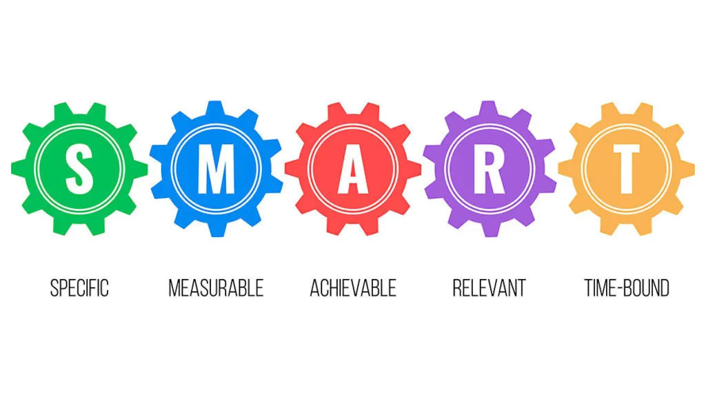

Your goal-setting is what will determine if you will get to the top of your developer career or not. Setting your goals is not hard, but setting goals that motivate you is more important.
Rules in Setting Goal
<h1>Self-Discipline </h1> <h1>Determination </h1>
As a developer aspiring to get on top of your career, you need to set goals that will help you reach the peak of your career and derive the best value to the company simultaneously. But how do you set goals for career development? In this article, we will explain to you how to go about it and ensure you achieve the best in your career.
Setting SMART Goals means they must
Specific
Measurable
Attainable
Timely

Have a personal brand
When setting your goals, stand out from the rest by developing a personal brand. Developing your brand helps you have opportunities and tech companies reaching out to you. Having a personal brand as a developer enables you to share your knowledge instead of trying to sell your service.
Develop a technical blog
You can have a technical blog where you teach other developers how to code, debug, and optimize. You can be active and involved in industry conferences and meetups. There are many platforms in the world and what you need to do is choose the ones that align with your career goals and pursue them. You can be a speaker at those events instead of just coding most of your time. It helps you build your network and develop interpersonal skills.
Find your best team fit
Technical talent alone doesn’t offer satisfaction within a team, and other qualities are needed. Finding the best team that has the same professional goals as yours is essential in achieving your goals. You need to have chemistry, trust, conflict resolution and communication to achieve your goals. Research has shown that team cohesiveness has a direct impact on positive job satisfaction. It is good to look at the qualities of the team you want to work with to ensure it’s the best fit.
Make your goals clear
Ensure you make your goals clear to help you work towards achieving them. Instead of I want to learn interpersonal skills, you can set the objective of ensuring that you interact with at least 15 fellow developers every month.
Learn to measure your success
Learn to set milestones in the course of the journey towards the top of your carrier. You can develop the skills and experience you feel will make your developer profession grow. Set measurement as learning and focus on gaining a new skill every month.
Check if your developer career goals are achievable
Once you set your goals, it is essential to check whether your goals are achievable or not.
Which goals to set to get on top of developer career?
The main objective when working as a developer is to be productive and deliver value to the company. As a developer or a CTO, the aim is to build practical applications that will be 100% successful. To achieve this, specific goals need to be set, which include:
Enhancing your networking skills
Completing a professional certificate or degree
Developing good communication skills?
Learning how other departments function
Improving performance metrics
Asking for feedback
Learning in-demand skills to increase professional
Become better in time management by tracking your time
Working effectively in a team
It is good we first understand what professional development opportunities are. They are careers vacancies that computer engineers can specialise in. They include:
Software application developer
Database administrator
Web developer
Computer systems engineer
Computer programmer
Software quality assurance engineer
Computer systems analyst
Business intelligence analyst
What are the main key areas of development for programmers?
The main areas that programmers should aim to develop are:
Mathematical aptitude
Organisational and time management skills
Problem-solving skills
Programming languages
Each role of a developer requires a different language.
Attention to details and accuracy
What are the main developer career goals for designers?
Designers have the following areas that they need to perfect:
Learn UX design
The design industry continues to become more focused on digital, and this makes user experience (UX) to be emphasized more. Nowadays, it is essential to design products that people can interact with and also employers are looking for designers who can achieve this.
Also, data has become central to many products, requiring people with user interface design skills to be sought after. Designers, therefore, need to make products that customers can use easily. UX designer ensures that the other person enjoys the end product both visually and cognitively. They remove any obstacles that may hinder the smooth experience of the product. UX design mainly concentrates with human behavior, unlike graphic design or web design.
Time management Skills
Time management skills are essential in design. Even if you create a world-class design work and you fail to deliver it within the agreed timeline, it is of no use. Therefore, ensuring that your time management skills are excellent is essential in advancing in your career. Ensuring that you can meet deadlines and developing clear systems to keep you on track is critical to achieving a good work ethic and succeeding in a design career.
First Programmer
Second Programmer
Third Programmer
Back-End Developer
Front-End Developer
Ui/Ux Designers
Problem-solving skills
Problem-solving skills are essential in designing and honing them helps us understand critical aspects in the course of the job. Such expertise helps you to think expansively and solve problems in a way that don’t raise questions afterwards
.jpg "blosom")